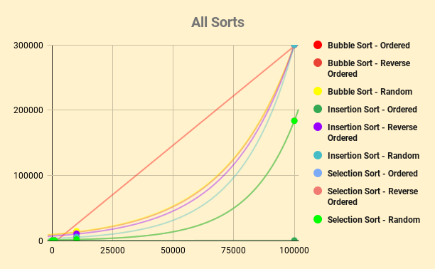

I chose a scatter plot to graph my data for every sort. It seemed the most reasonable because each sort had multiple points to graph, which a scatter plot graphs perfectly. From the scatter plot, it can be seen that the bubble sort and insertion sort had around the same times for the reverse order and random text type, but bubble sort was a lot slower for the ordered file. Selection Sort was the fastest sort for me and each 100,000 word file was almost half the time of the 100,000 word files for the other sorts besides the ordered sort for Insertion Sort. The ordered text files were usually the fastest because there were no swapping. Reverse ordered was the longest because every single word had to be swapped, and random was longer than ordered but faster than reverse because not every word had to be swapped.
